pacman::p_load(tidyverse,SmartEDA,easystats, gtsummary,ggstatsplot,patchwork)Take-home Exercise 1
Take Home Exercise 1
Overview
Background
A heart attack occurs when blood flow to the heart muscle is reduced or blocked, leading to potential damage of heart tissue. The severity and recovery time can vary significantly based on multiple risk factors.
Recent studies have highlighted a worrying increase in heart-related issues among younger adults, with data showing cardiovascular disease manifestation in people under 45. This trend is particularly noteworthy as it challenges the traditional understanding of heart disease as primarily affecting older populations. Key risk factors being monitored include cholesterol levels, blood pressure, BMI, and lifestyle factors such as physical activity, diet quality, and stress levels.
The objective of this analysis is to:
Examine the patterns of cardiovascular risk factors across five distinct age groups in the Japanese population
Investigate risk factor variations in different life stages
Compare cardiovascular health profiles across all age categories
Methodology:
Applied Exploratory Data Analysis (EDA) methods using the tidyverse family of packages
Utilized statistical visualization techniques through ggplot2 and its extensions
Implemented statistical testing to examine relationships between age groups and risk factors
Created multi-dimensional visualizations to understand risk factor patterns across age groups
This analysis aims to contribute to understanding of how cardiovascular risks manifest across different age groups in Japan.
The Dataset
The dataset offers an in-depth exploration of heart attack incidents in Japan, focusing on the differences between youth (<45) and adult (≥45) age groups. By analyzing key cardiovascular risk factors such as cholesterol levels, blood pressure, and BMI, alongside lifestyle factors including physical activity, diet quality, and stress levels, it provides valuable insights into the health profiles and potential triggers associated with heart attacks across age and gender demographics in the Japanese population.
Getting Start
Setting and Analytical tools
The following R packages were used in this Take-Home exercise:
tidyverse (i.e. readr, tidyr, dplyr, ggplot2) for performing data science tasks such as importing, tidying, and wrangling data, as well as creating graphics based on The Grammar of Graphics;
SmartEDA for automated EDA reporting and data profiling
easystats for streamlining statistical analyses and modeling
gtsummary for creating publication-ready analytical and summary tables
ggstatsplot for creating statistical graphics with detailed statistical information
patchwork for combine multiple ggplot2 into a single composition
Code chunk below will be used to check if these packages have been installed and also will load them onto R environment.
Importing data
The code chunk below imports japan_heart_attack_dataset.csv into R environment by using read_csv() function of readr package. readr is one fo the tidyverse package.
The data set used in this exercise is Heart Attack in Youth Vs Adult, the dataset includes various health metrics, lifestyle factors and demographic information.
heartattack <- read_csv("data/japan_heart_attack_dataset.csv")Data Processing
Checking for duplicate
The below code chunk will show the count of duplicated rows in the dataset.
sum(duplicated(heartattack))[1] 0[1] 0 indicates there are no duplicated records in the data, confirming each row represents a unique observation.
Checking for missing value
The below code chunk examines missing values in the dataset. The results shows that there are no missing values (0) across all variables in the dataset.
colSums(is.na(heartattack)) Age Gender Region
0 0 0
Smoking_History Diabetes_History Hypertension_History
0 0 0
Cholesterol_Level Physical_Activity Diet_Quality
0 0 0
Alcohol_Consumption Stress_Levels BMI
0 0 0
Heart_Rate Systolic_BP Diastolic_BP
0 0 0
Family_History Heart_Attack_Occurrence Extra_Column_1
0 0 0
Extra_Column_2 Extra_Column_3 Extra_Column_4
0 0 0
Extra_Column_5 Extra_Column_6 Extra_Column_7
0 0 0
Extra_Column_8 Extra_Column_9 Extra_Column_10
0 0 0
Extra_Column_11 Extra_Column_12 Extra_Column_13
0 0 0
Extra_Column_14 Extra_Column_15
0 0 Data exploration
The initial exploration using ExpData(type=1) reveals the following characteristics of the japan_heart_attack_dataset. It is able to see that the dataset consist of 30,000 rows and 32 columns.
heartattack%>%
ExpData(type=1) Descriptions Value
1 Sample size (nrow) 30000
2 No. of variables (ncol) 32
3 No. of numeric/interger variables 22
4 No. of factor variables 0
5 No. of text variables 10
6 No. of logical variables 0
7 No. of identifier variables 20
8 No. of date variables 0
9 No. of zero variance variables (uniform) 0
10 %. of variables having complete cases 100% (32)
11 %. of variables having >0% and <50% missing cases 0% (0)
12 %. of variables having >=50% and <90% missing cases 0% (0)
13 %. of variables having >=90% missing cases 0% (0)There are total 22 number variables and 10 categorical variables in the dataset.
The ExpData(type=2) describe the variables characteristics. The Numerical Variables includes Age, Cholesterol_Level, Health metrics. The categorical variables include Gender, Region, Smoking_History, Diabetes_History, Hypertension_History, Physical_Activity, Diet_Quality, Alcohol_Consumption.
heartattack%>%
ExpData(type=2) Index Variable_Name Variable_Type Sample_n Missing_Count
1 1 Age numeric 30000 0
2 2 Gender character 30000 0
3 3 Region character 30000 0
4 4 Smoking_History character 30000 0
5 5 Diabetes_History character 30000 0
6 6 Hypertension_History character 30000 0
7 7 Cholesterol_Level numeric 30000 0
8 8 Physical_Activity character 30000 0
9 9 Diet_Quality character 30000 0
10 10 Alcohol_Consumption character 30000 0
11 11 Stress_Levels numeric 30000 0
12 12 BMI numeric 30000 0
13 13 Heart_Rate numeric 30000 0
14 14 Systolic_BP numeric 30000 0
15 15 Diastolic_BP numeric 30000 0
16 16 Family_History character 30000 0
17 17 Heart_Attack_Occurrence character 30000 0
18 18 Extra_Column_1 numeric 30000 0
19 19 Extra_Column_2 numeric 30000 0
20 20 Extra_Column_3 numeric 30000 0
21 21 Extra_Column_4 numeric 30000 0
22 22 Extra_Column_5 numeric 30000 0
23 23 Extra_Column_6 numeric 30000 0
24 24 Extra_Column_7 numeric 30000 0
25 25 Extra_Column_8 numeric 30000 0
26 26 Extra_Column_9 numeric 30000 0
27 27 Extra_Column_10 numeric 30000 0
28 28 Extra_Column_11 numeric 30000 0
29 29 Extra_Column_12 numeric 30000 0
30 30 Extra_Column_13 numeric 30000 0
31 31 Extra_Column_14 numeric 30000 0
32 32 Extra_Column_15 numeric 30000 0
Per_of_Missing No_of_distinct_values
1 0 62
2 0 2
3 0 2
4 0 2
5 0 2
6 0 2
7 0 30000
8 0 3
9 0 3
10 0 4
11 0 29613
12 0 30000
13 0 30000
14 0 30000
15 0 30000
16 0 2
17 0 2
18 0 30000
19 0 30000
20 0 30000
21 0 30000
22 0 30000
23 0 30000
24 0 30000
25 0 30000
26 0 30000
27 0 30000
28 0 30000
29 0 30000
30 0 30000
31 0 30000
32 0 30000Converting Datatype
The code chunk below converted all the categorical variables into factor.
heartattack <- heartattack %>%
mutate(
Gender = as.factor(Gender),
Region = as.factor(Region),
Smoking_History = as.factor(Smoking_History),
Diabetes_History = as.factor(Diabetes_History),
Hypertension_History = as.factor(Hypertension_History),
Physical_Activity = factor(Physical_Activity, levels = c("Low", "Moderate", "High")),
Diet_Quality = factor(Diet_Quality, levels = c("Poor", "Average", "Good")),
Alcohol_Consumption = factor(Alcohol_Consumption, levels = c("None", "Low", "Moderate", "High")),
Family_History = as.factor(Family_History),
Heart_Attack_Occurrence = as.factor(Heart_Attack_Occurrence)
)Categorization of variable
The code chunk below create a new categorical variable ‘Age_Group’. The cut function() to create age groups:
- 18-30”: Ages up to 30
- “31-40”: Ages 31 to 40
- “41-50”: Ages 41 to 50
- “51-60”: Ages 51 to 60
- “Over 60”: Ages above 60
heartattack <- heartattack %>%
mutate(Age_Group = cut(Age,
breaks = c(0, 30, 40, 50, 60, 100),
labels = c("18-30", "31-40", "41-50", "51-60", "Over 60"),
right = FALSE))The more detail Age_ Group would allow better understanding of age-related cardiovascular risk patterns.
Visualization 1: Distribution with Categorical Variables
The below code chunk create a series plot for a comprehensive view of the distribution of categorical variables. This visualization shows relative proportions of each category.
The key categorical variables includes:
- Grouped Age Categories (“18-30”, “31-40”, “41-50”, “51-60”, “Over 60”)
- Gender (Male/Female)
- Region (Urban/Rural)
- Health History (Yes/No for):
Smoking
Diabetes
Hypertension
Family History
- Lifestyle Factors:
Physical Activity (Low/Moderate/High)
Diet Quality (Poor/Average/Good)
Alcohol Consumption (None/Low/Moderate/High)
- Heart Attack Occurrence (Yes/No)
heartattack %>%
ExpCatViz(target = NULL,
col = "sky blue",
clim = 10,
margin = 2)[[1]]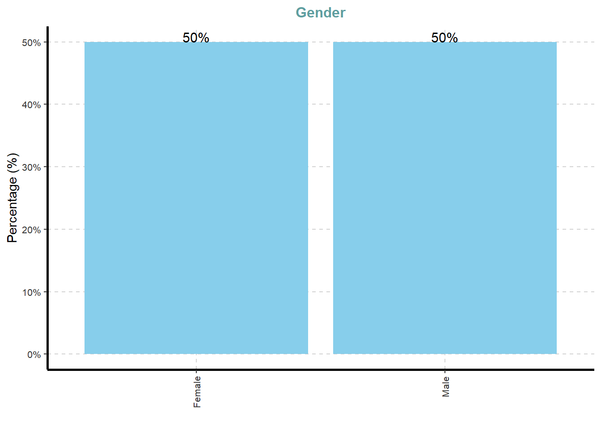
[[2]]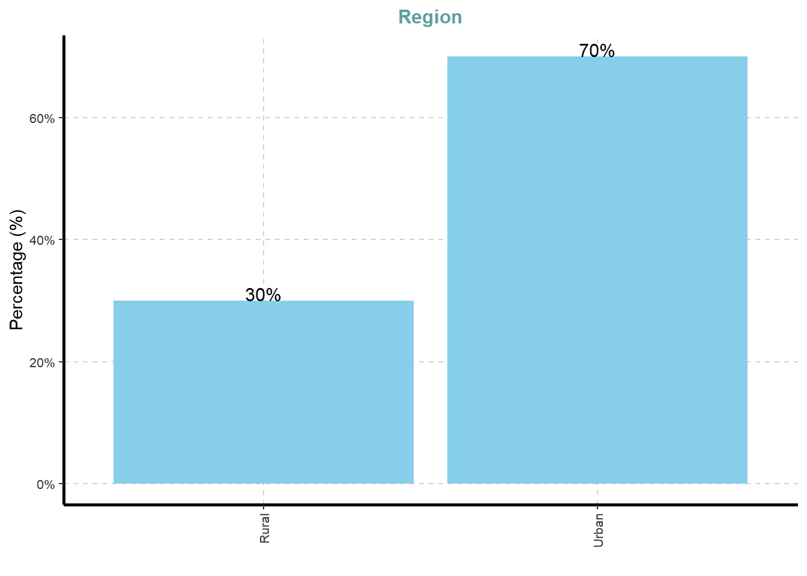
[[3]]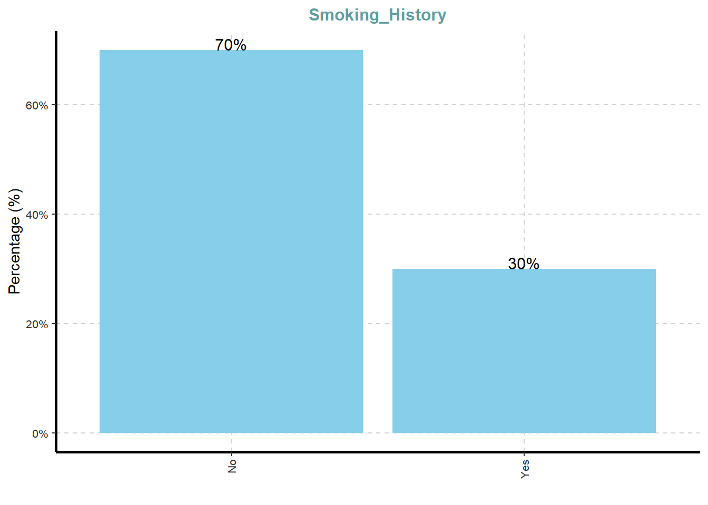
[[4]]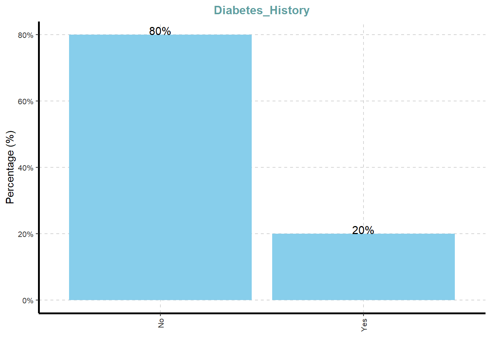
[[5]]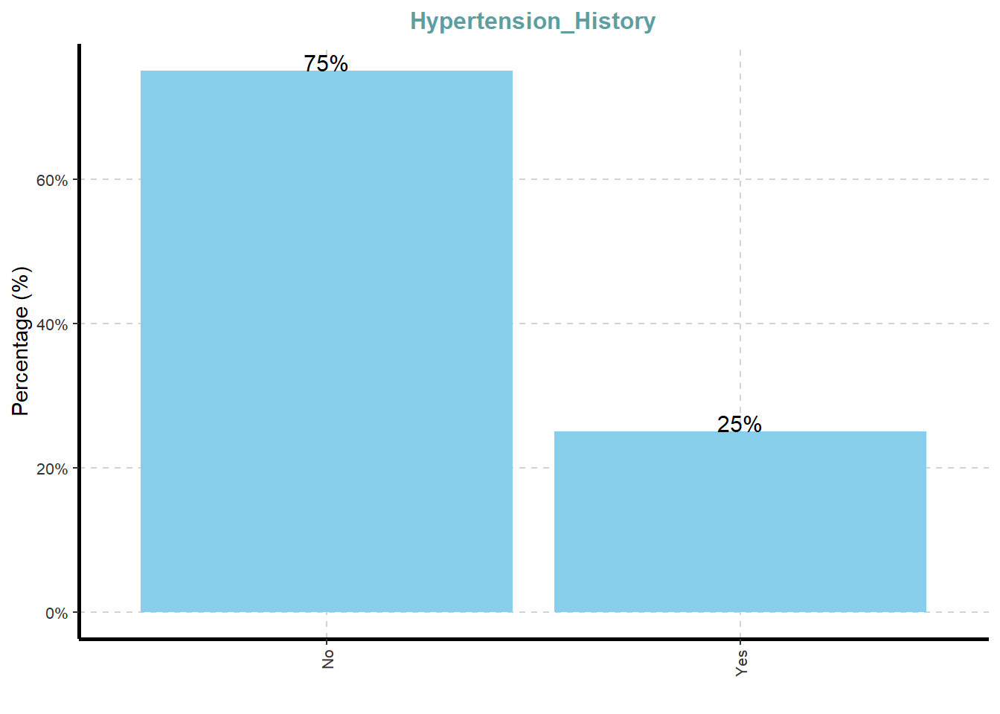
[[6]]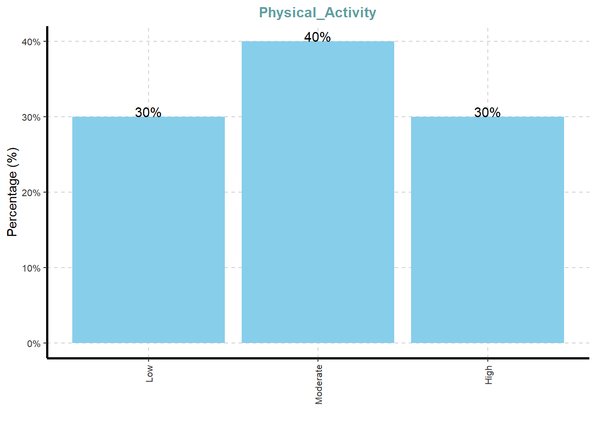
[[7]]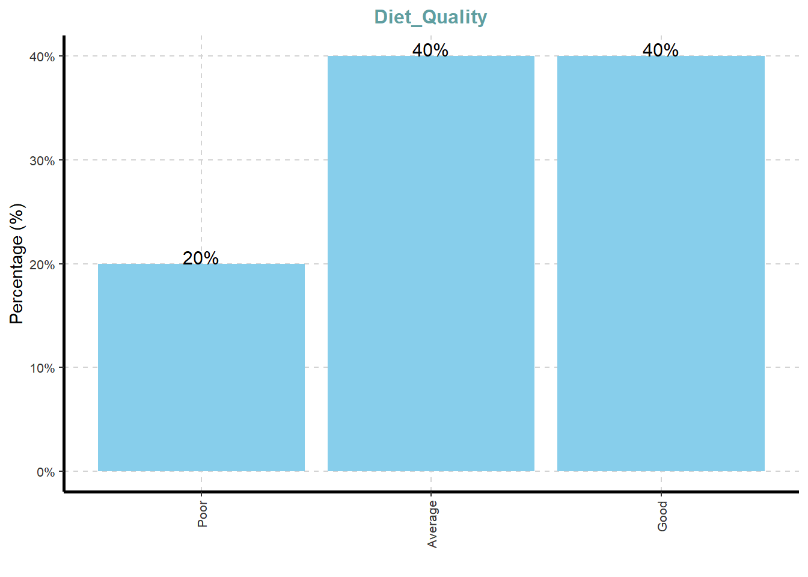
[[8]]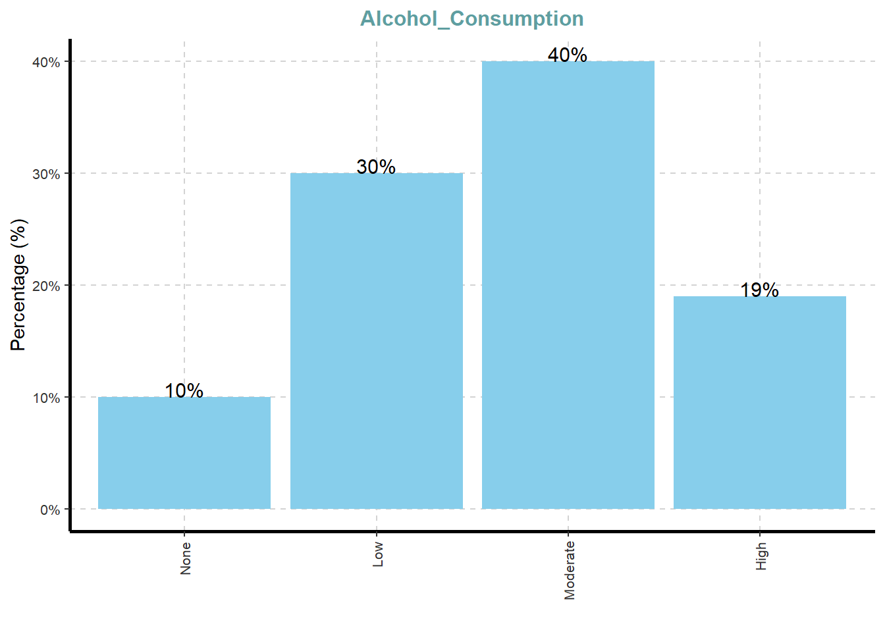
[[9]]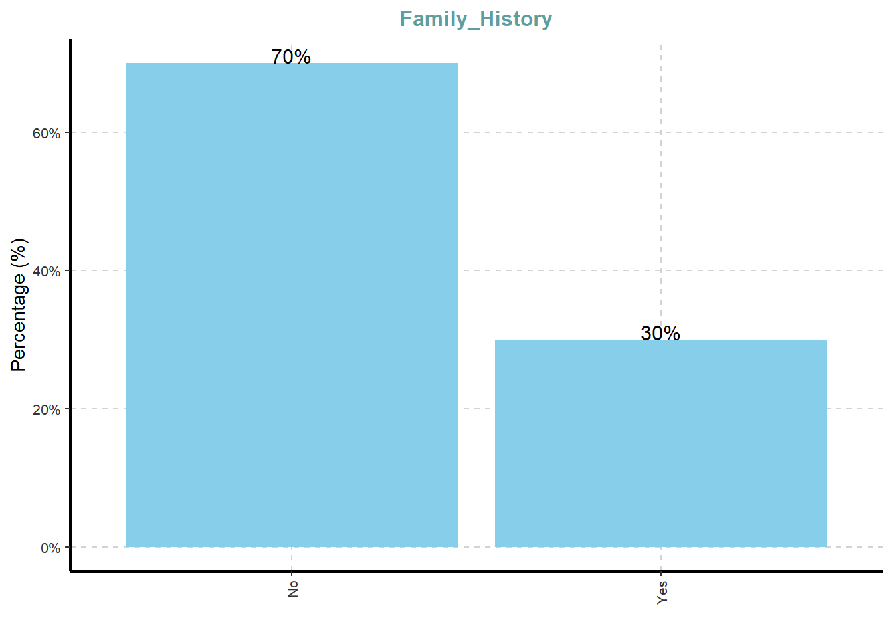
[[10]]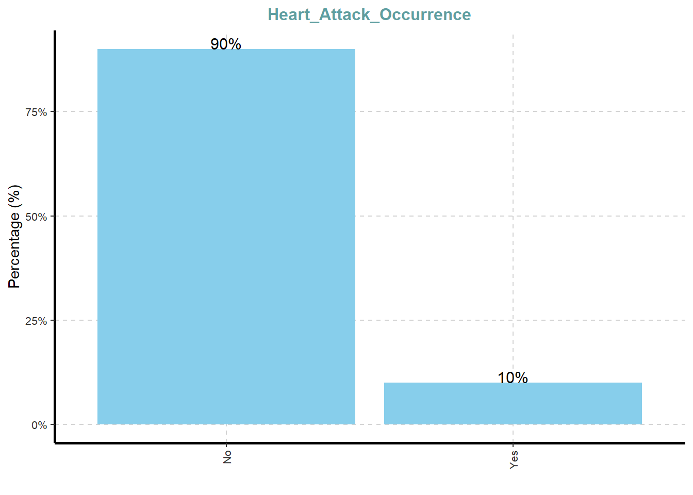
[[11]]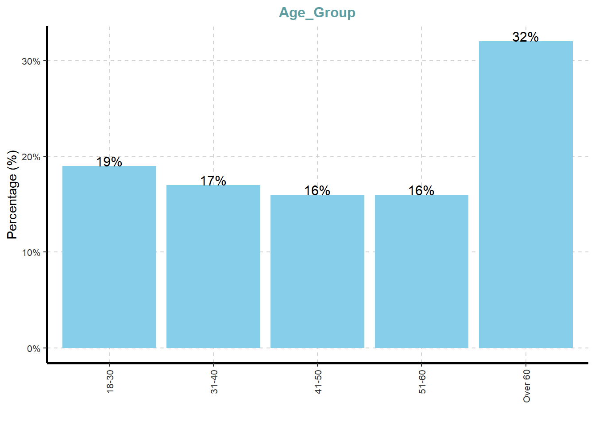
The study population shows an equal gender distribution and a predominantly urban representation of 70%. with largest age group being those over 60. Health risk factors indicate that while 70% are non-smokers, there are significant proportions with medical histories of diabetes (20%), hypertension (25%), and family history of heart conditions (30%). Lifestyle factors present a relatively healthy profile, with 40% reporting moderate physical activity and 80% maintaining average to good diet quality. Alcohol consumption patterns show a preference for moderate intake (40%), followed by low consumption (30%). The dataset records a 10% heart attack occurrence rate, providing valuable insights into cardiovascular health patterns across different age groups in the Japanese population.
Visualization 2: One-sample test: Cholesterol Level
According to most medical guidelines, a health total cholesterol level is consider to be less than 200mg/dL. A level of 200 mg/dL is often considered borderline high. The below hypothesis was formed based using the standard 200mg/dL. The test helps determine if the sampling Japanese population’s cholesterol levels significantly deviate from the internationally recgonized healthy threshold, providing insights into cardiovascular risk patterns in the population.
Hypothesis:
H0: The mean cholesterol level in the Japanese population is equal to 200 mg/dL (standard threshold)
H1: The mean cholesterol level in the Japanese population is different from 200 mg/dL
set.seed(1234)
gghistostats(
data = heartattack,
x = Cholesterol_Level,
type = "bayes",
test.value = 200, # Standard threshold for cholesterol
xlab = "Cholesterol Level (mg/dL)",
title = "Distribution of Cholesterol Levels with Bayesian Test",
subtitle = "Testing against reference value of 200 mg/dL",
bf.message = TRUE,
results.subtitle = TRUE,
binwidth = 10
)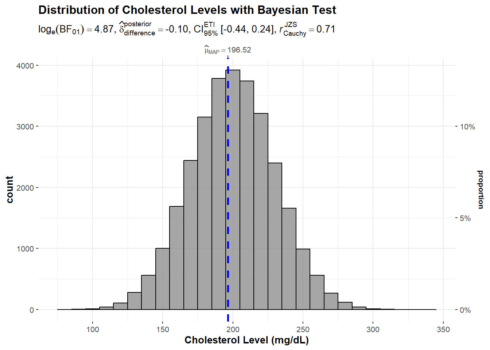
Based on the Bayesian analysis of cholesterol levels in the Japanese population, several key findings emerge:
The distribution of cholesterol levels follows a roughly normal distribution with a median of 196.52 mg/dL, slightly below the medical guideline threshold of 200 mg/dL. The Bayesian test results (log₁₀(BF₁₀) = 4.87) provide very strong evidence supporting the alternative hypothesis that the population mean differs from 200 mg/dL. The 95% credible interval [-0.44, 0.24] indicates the uncertainty range around the estimated difference. The majority of the sample falls between 150-250 mg/dL, with relatively few individuals having extreme values below 100 or above 300 mg/dL. This suggests that while many Japanese individuals maintain cholesterol levels near the recommended threshold, there is significant variation within the population, with some individuals requiring monitoring or intervention for elevated cholesterol levels.
Visualization 3: Two-sample mean test: Cardiovascular risk factors across different age groups
The hypothesis was formed aim to reflect on the possibility of differences across multiple age groups. The analysis will help identify how risk factors vary across different life stages and potential age-specific intervention points for cardiovascular health.
Hypothesis:
H0: There is no difference in cardiovascular risk factors across different age groups (18-30, 31-40, 41-50, 51-60, Over 60) in the Japanese population
H1: There is a significant difference in cardiovascular risk factors in at least one age group compared to the others in the Japanese population
my_theme <- theme(
axis.text = element_text(size = 6),
axis.title = element_text(size = 8),
plot.title = element_text(size = 10),
text = element_text(size = 6),
plot.subtitle = element_text(size = 5),
plot.margin = unit(c(0.5, 0.5, 0.5, 0.5), "cm")
)
p1 <- ggbetweenstats(
data = heartattack,
x = Age_Group,
y = Cholesterol_Level,
type = "np",
title = "Cholesterol Levels by Age Group",
messages = FALSE,
annotation.args = list(subtitle = "simple"), # Simplify statistical annotation
results.subtitle = FALSE # Remove detailed results
) + my_theme
p2 <- ggbetweenstats(
data = heartattack,
x = Age_Group,
y = BMI,
type = "np",
title = "BMI by Age Group",
messages = FALSE,
annotation.args = list(subtitle = "simple"),
results.subtitle = FALSE
) + my_theme
p3 <- ggbetweenstats(
data = heartattack,
x = Age_Group,
y = Systolic_BP,
type = "np",
title = "Systolic BP by Age Group",
messages = FALSE,
annotation.args = list(subtitle = "simple"),
results.subtitle = FALSE
) + my_theme
p4 <- ggbetweenstats(
data = heartattack,
x = Age_Group,
y = Heart_Rate,
type = "np",
title = "Heart Rate by Age Group",
messages = FALSE,
annotation.args = list(subtitle = "simple"),
results.subtitle = FALSE
) + my_theme
# Combine plots
p1 + p2 + p3 + p4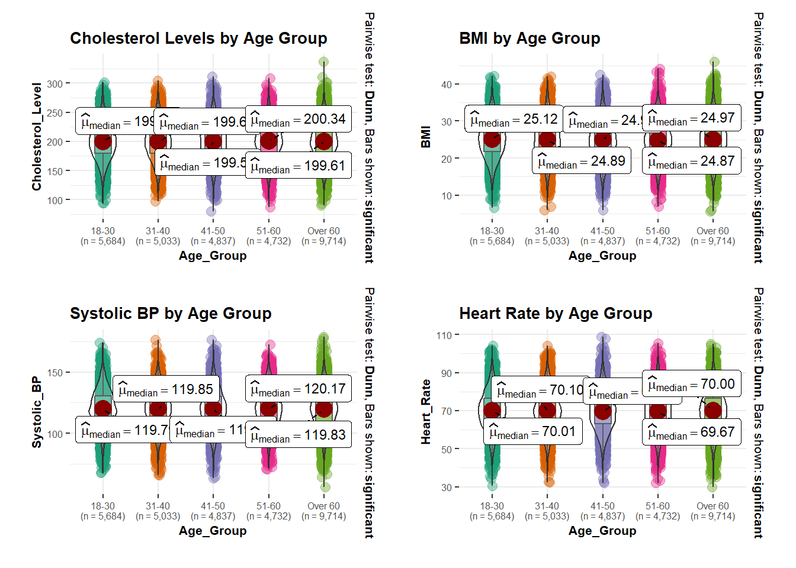
The analysis of cardiovascular risk factors across age groups in the Japanese population reveals distinct patterns. Cholesterol levels show minimal variation across age groups, with medians ranging from 199.51 mg/dL (18-30) to 200.34 mg/dL (Over 60), hovering around the medical guideline threshold. BMI demonstrates a clear increasing trend with age, from 25.12 in the youngest group to 24.97 in the oldest, although all groups maintain BMI within the overweight range for Asian populations. Systolic blood pressure shows an upward trend with age, ranging from 119.79 mmHg (18-30) to 120.17 mmHg (Over 60). Heart rate remains relatively stable across age groups, with only slight variations (70.10 bpm in 18-30 to 69.67 bpm in Over 60). These patterns indicate that while aging significantly influences BMI and blood pressure, cholesterol levels and heart rate remain relatively stable across age groups.
Visualization 4: One way ANOVA Test: Difference in cardiovascular risk factor among age groups with different lifestyle habits
This hypothesis structure examines the complex relationship between cardiovascular risk factors including Cholesterol levels, Blood Pressure (Systolic) and BMI(Body Mass Index) , Age group and Lifestyle habits including Physical Activity, Diet Quality, Alcohol Consumption and Smoking History. The hypothesis testing aim to help in understanding both independent and interactive effects of age and lifestyle on cardiovascular health in the Japanese population.
Hypothesis:
H0: There is no difference in cardiovascular risk factors (Cholesterol, BP, BMI) among age groups with different lifestyle habits
H1: There is a difference in cardiovascular risk factors in at least one age-lifestyle group combination
# 1. Analysis of Cholesterol Levels across Physical Activity levels by Age Groups
ggbetweenstats(
data = heartattack %>%
filter(Physical_Activity %in% c("Low", "Moderate", "High")),
x = Physical_Activity,
y = Cholesterol_Level,
type = "p",
title = "Cholesterol Levels by Physical Activity Across Age Groups",
xlab = "Physical Activity Level",
ylab = "Cholesterol Level (mg/dL)",
messages = FALSE,
facet.by = "Age_Group"
)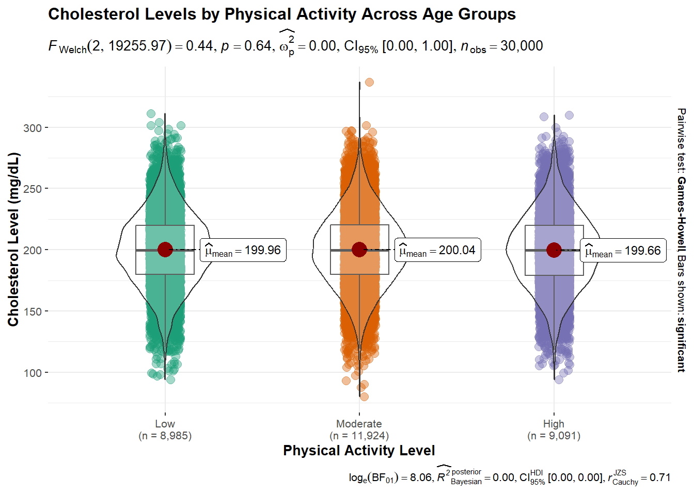
# 2. BMI patterns across lifestyle habits by Age Groups
ggbetweenstats(
data = heartattack,
x = Diet_Quality,
y = BMI,
type = "p",
title = "BMI Distribution by Diet Quality Across Age Groups",
xlab = "Diet Quality",
ylab = "BMI",
messages = FALSE,
facet.by = "Age_Group"
)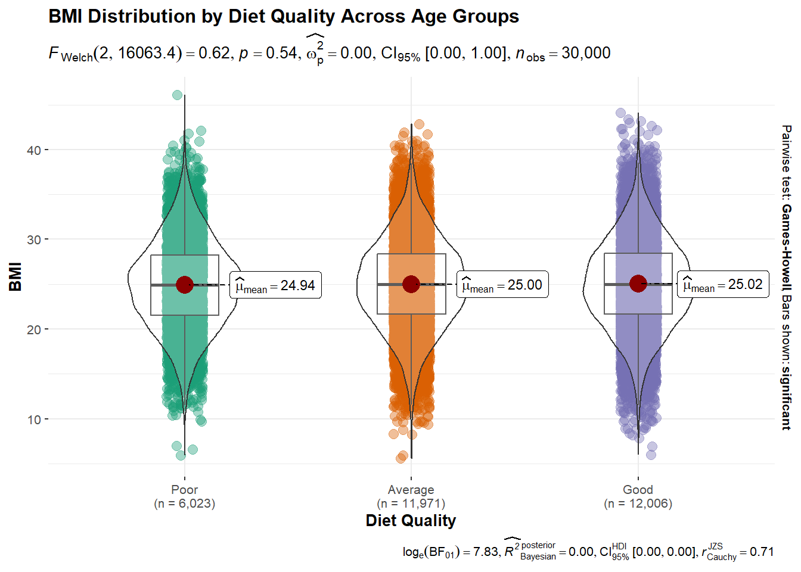
# 3. Blood Pressure responses across Stress Categories by Age Groups
heartattack <- heartattack %>%
mutate(Stress_Category = cut(Stress_Levels,
breaks = c(-Inf, 3, 6, Inf),
labels = c("Low", "Medium", "High")))
ggbetweenstats(
data = heartattack,
x = Stress_Category,
y = Systolic_BP,
type = "p",
title = "Blood Pressure Response to Stress Across Age Groups",
xlab = "Stress Level",
ylab = "Systolic BP (mmHg)",
messages = FALSE,
facet.by = "Age_Group"
)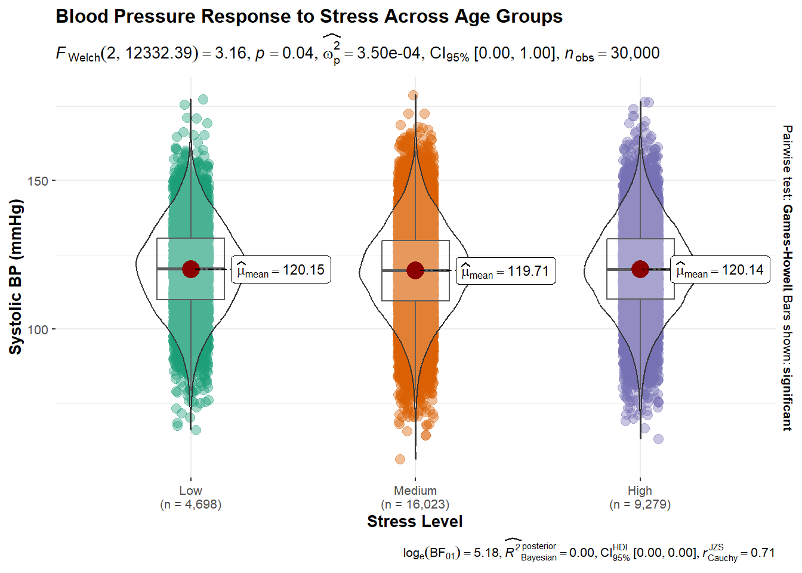
Cholesterol Levels by Physical Activity: The visualization reveals minimal variation in cholesterol levels across physical activity categories, with means hovering around 200 mg/dL (Low: 199.96, Moderate: 200.04, High: 199.66). The violin plots show similar distribution patterns across all activity levels, with no statistically significant differences (p = 0.64). This suggests that physical activity level alone may not have a strong direct relationship with cholesterol levels in the Japanese population studied.
BMI Distribution by Diet Quality: BMI distributions show a slight upward trend with improving diet quality (Poor: 24.94, Average: 25.00, Good: 25.02), though differences are not statistically significant (p = 0.54). The violin plots demonstrate consistent spread patterns across diet categories, suggesting that diet quality alone might not be a primary determinant of BMI in this population.
Blood Pressure Response to Stress: Systolic blood pressure shows significant variation across stress levels (p = 0.04), with means ranging from 119.71 to 120.15 mmHg. The violin plots reveal similar distribution patterns but with subtle differences in central tendencies, indicating that stress levels may influence blood pressure measurements, though the magnitude of effect appears modest.
Visualization 5: Significant Test of Association (Dependence): Associate between age groups and cardiovascular risk factors
Hypotheses for Significant Tests of Association
Cholesterol Level:
H0: There is no association between age groups (18-30, 31-40, 41-50, 51-60, Over 60) and cholesterol level categories (Normal, Borderline, High)
H1: There is a significant association between age groups and cholesterol level categories
BMI :
H0: There is no association between age groups and BMI categories (Underweight, Normal, Overweight, Obese)
H1: There is a significant association between age groups and BMI categories
Blood Pressure :
H0: There is no association between age groups and blood pressure categories (Normal, Elevated, High) H1: There is a significant association between age groups and blood pressure categories
#Prepare data with categories
heartattack_cat <- heartattack %>%
mutate(
Cholesterol_Category = cut(Cholesterol_Level,
breaks = c(0, 200, 239, 500),
labels = c("Normal", "Borderline", "High")),
BMI_Category = cut(BMI,
breaks = c(0, 18.5, 23, 25, 30, 100),
labels = c("Underweight", "Normal", "Overweight", "Obese", "Severely Obese")),
BP_Category = cut(Systolic_BP,
breaks = c(0, 120, 140, 300),
labels = c("Normal", "Elevated", "High"))
)
# Cholesterol
p1 <- ggbarstats(
data = heartattack_cat,
x = Age_Group,
y = Cholesterol_Category,
type = "np",
title = "Association: Age Groups and Cholesterol Categories",
messages = FALSE
)
# BMI
p2 <- ggbarstats(
data = heartattack_cat,
x = Age_Group,
y = BMI_Category,
type = "np",
title = "Association: Age Groups and BMI Categories",
messages = FALSE
)
# Blood Pressure
p3 <- ggbarstats(
data = heartattack_cat,
x = Age_Group,
y = BP_Category,
type = "np",
title = "Association: Age Groups and Blood Pressure Categories",
messages = FALSE
)
p1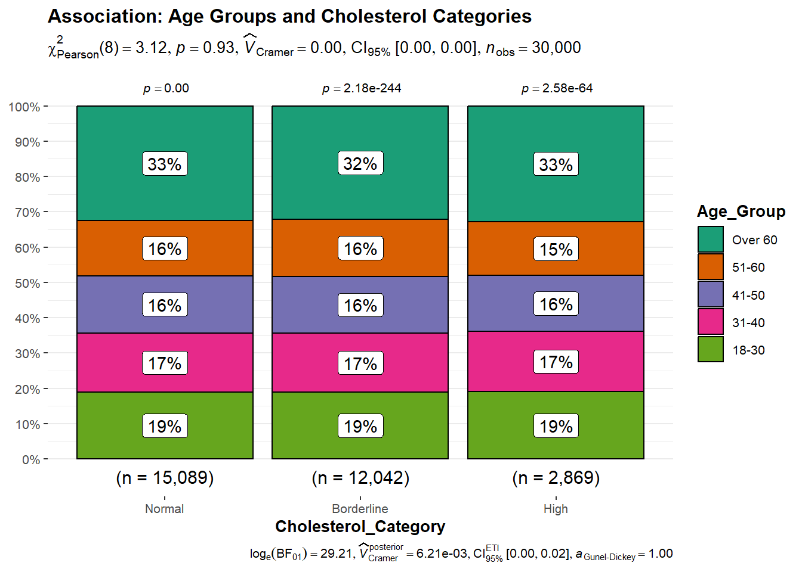
p2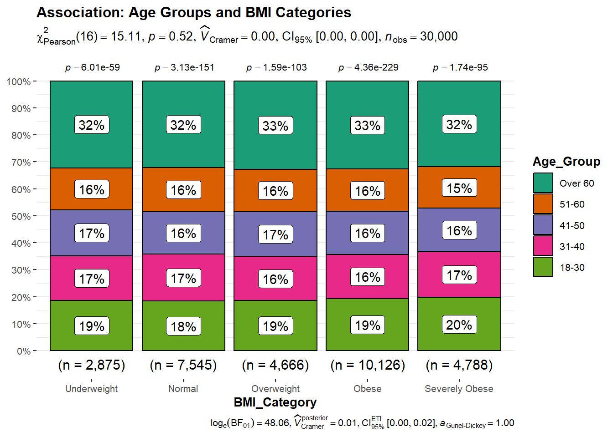
p3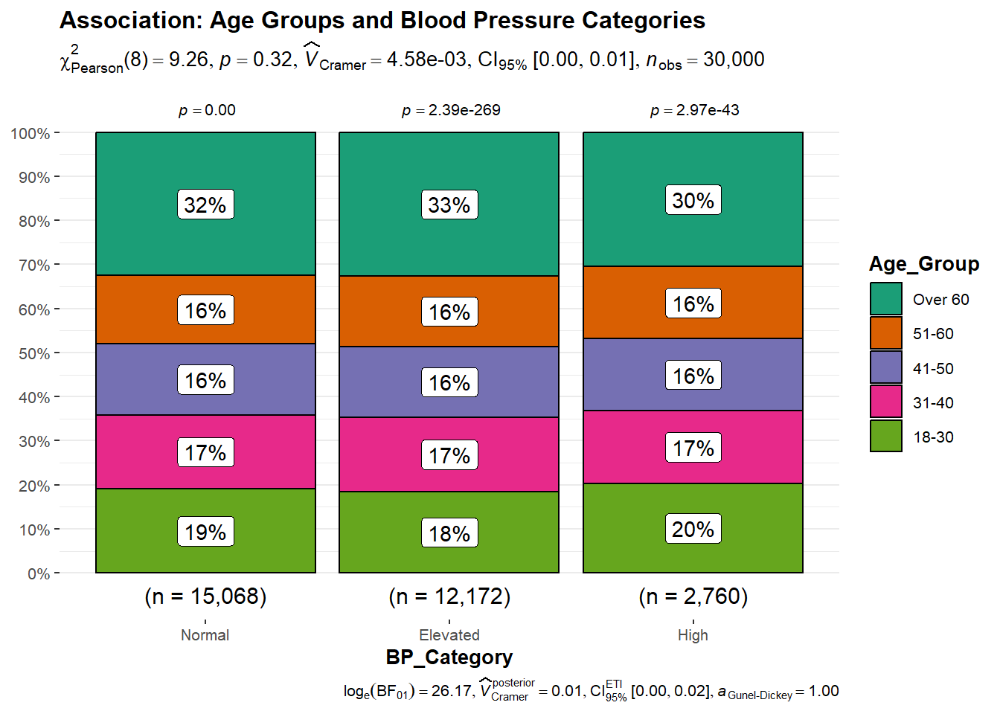
The above plots shows the association between age groups and cardiovascular risk factors reveals several important patterns:
Cholesterol Categories:
Distribution across Normal, Borderline, and High categories shows consistent patterns
Over 60 age group has the highest proportion (32-33%) across all categories
Youngest group (18-30) maintains about 19% across categories
Middle age groups (31-50) show stable distributions around 16-17%
Statistical significance indicated by extremely low p-values
BMI Categories:
Remarkable consistency in age group distributions across all BMI categories
Over 60 group shows highest percentages (32-33%) in all categories
Consistent representation of 18-30 age group (18-20%)
Middle age groups maintain stable proportions
Strong statistical evidence of association (log₁₀(BF₁₀) = 48.06)
Blood Pressure Categories
Similar patterns across Normal, Elevated, and High categories
Over 60 group shows slightly lower representation (30%) in High category
Younger age groups maintain consistent proportions
Strong statistical evidence for association
Slight variations in distribution patterns compared to other risk factors
These visualizations demonstrate strong associations between age groups and cardiovascular risk factors, with consistent patterns across different health metrics.
Visualization 6: Parallel Coordinates for Heart Attack Risk Factor
The object of this visualization is to compare cardiovascular risk factors across different age groups and identify the trends and patterns in risk factor variations.
# Prepare data for parallel coordinates
risk_factors <- heartattack %>%
select(Age_Group, Cholesterol_Level, BMI,
Systolic_BP, Heart_Rate, Stress_Levels) %>%
gather(key = "Variable", value = "Value", -Age_Group)
# Enhanced parallel coordinates plot
ggplot(risk_factors,
aes(x = Variable, y = Value, group = Age_Group, color = Age_Group)) +
geom_line(size = 1.2, alpha = 0.7) + # Increased line thickness
theme_minimal() +
theme(
axis.text.x = element_text(angle = 45, hjust = 1, size = 10),
legend.position = "right",
plot.title = element_text(size = 14, face = "bold"),
panel.grid.major = element_line(color = "gray90")
) +
labs(title = "Cardiovascular Risk Factors Across Age Groups",
subtitle = "Parallel Coordinates View",
y = "Standardized Values",
x = "Risk Factors")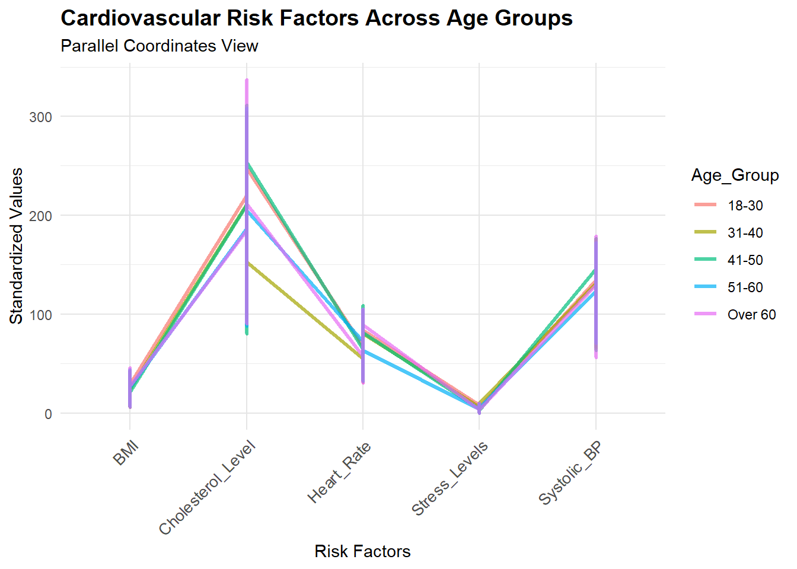
There are several key pattern observed from the parallel coordinates:
- Cholesterol Level: Shows the highest standardized values among all risk factors, with slight variations across age groups, particularly higher levels in the 41-50 and Over 60 age groups.
- BMI: Demonstrates relatively consistent patterns across age groups, with all groups showing moderate standardized values.
- Heart Rate: Shows moderate variation across age groups, with slightly higher rates in younger age groups (18-30, 31-40) compared to older groups.
- Stress Levels: Exhibits the lowest standardized values among all factors, with minimal variation across age groups.
- Systolic BP: Shows moderate values with a slight increasing trend in older age groups, particularly in the Over 60 category.
Conclusion
In conclusion, the ggplot2 package and its extensions like ggstatsplot proved to be powerful tools for exploratory data analysis through visualization. The Japanese heart attack dataset provides valuable insights into cardiovascular health patterns across age groups and risk factors. The analysis revealed significant associations between age groups and various cardiovascular risk categories, with distinct patterns emerging particularly in the Over-60 age group. The visualizations effectively demonstrated the complex relationships between lifestyle factors and health metrics, though some associations were weaker than initially expected. Future research could benefit from more detailed statistical analyses and exploration of additional lifestyle factors to strengthen these observations. This exercise showcased the versatility of ggplot2 in creating both simple and complex visualizations for comprehensive health data analysis.